This section will walk you through the beginning steps for how to visualize your data using ggplot2. R has several systems for making graphs, but ggplot2 is one of the most elegant and most versatile. ggplot2 implements the grammar of graphics, a coherent system for describing and building graphs. With ggplot2, you can do more faster by learning one system and applying it in many places.
This ssection focuses on ggplot2, one of the core packages of the tidyverse library. To access the datasets, help pages, and functions that we will use in this section, load the tidyverse library by running this code in the console, in your script, or by checking the tidyverse box in the Packages tab in RStudio. Note that if it does not appear in the Packages tab then it is not installed and you will have to install tidyverse before you can load it up.
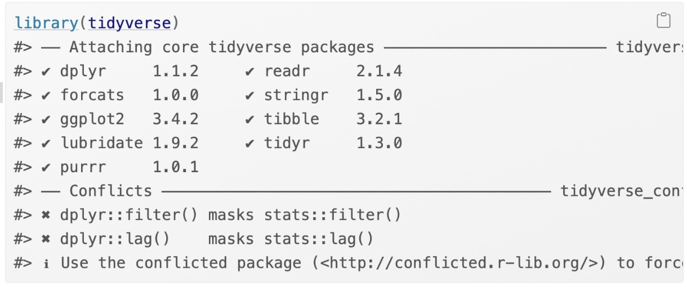
That one line of code loads the core tidyverse; packages which you will use in almost every data analysis. It also tells you which functions from the tidyverse conflict with functions in base R (or from other packages you might have loaded).
If you run this code and get the error message “there is no package called ‘tidyverse’”, you’ll need to first install it, then run library() once again.
You only need to install a package once, but you need to reload it every time you start a new session. If we need to be explicit about where a function (or dataset) comes from, we’ll use the special form package::function(). For example, ggplot2::ggplot() tells you explicitly that we’re using the ggplot() function from the ggplot2 package.
Let’s use our first graph to answer a question: Do cars with big engines use more fuel than cars with small engines? You probably already have an answer, but try to make your answer precise. What does the relationship between engine size and fuel efficiency look like?
You can test your answer with the mpg data frame found in ggplot2 (aka ggplot2::mpg). A data frame is a rectangular collection of variables (in the columns) and observations (in the rows). mpg contains observations collected by the US Environmental Protection Agency on 38 models of car.
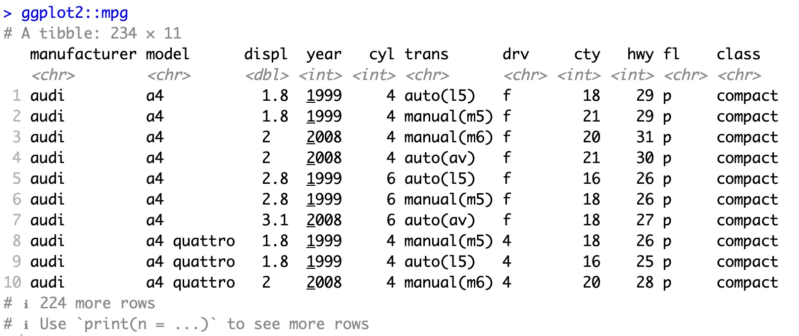
A few examples of the variables in mpg are:
displ, a car’s engine size, in litres.
hwy, a car’s fuel efficiency on the highway, in miles per gallon (mpg). A car with a low fuel efficiency consumes more fuel than a car with a high fuel efficiency when they travel the same distance.
To learn more about mpg, open its help page by running ?mpg.
To plot mpg, run this code to put displ on the x-axis and hwy on the y-axis:
library(tidyverse)
── Attaching core tidyverse packages ──────────────────────── tidyverse 2.0.0 ──
✔ dplyr 1.1.4 ✔ readr 2.1.5
✔ forcats 1.0.0 ✔ stringr 1.5.1
✔ ggplot2 3.5.1 ✔ tibble 3.2.1
✔ lubridate 1.9.4 ✔ tidyr 1.3.1
✔ purrr 1.0.4
── Conflicts ────────────────────────────────────────── tidyverse_conflicts() ──
✖ dplyr::filter() masks stats::filter()
✖ dplyr::lag() masks stats::lag()
ℹ Use the conflicted package (<http://conflicted.r-lib.org/>) to force all conflicts to become errors
ggplot(data = mpg) +geom_point(mapping =aes(x = displ, y = hwy))
The plot shows a negative relationship between engine size (displ) and fuel efficiency (hwy). In other words, cars with big engines use more fuel. Does this confirm or refute your hypothesis about fuel efficiency and engine size?
With ggplot2, you begin a plot with the function ggplot(). ggplot() creates a coordinate system that you can add layers to. The first argument of ggplot() is the dataset to use in the graph. So ggplot(data = mpg) creates an empty graph, but it’s not very interesting so I’m not going to show it here.
You complete your graph by adding one or more layers to ggplot(). The function geom_point() adds a layer of points to your plot, which creates a scatterplot. ggplot2 comes with many geom functions that each add a different type of layer to a plot. You’ll learn a whole bunch of them throughout this section.
Each geom function in ggplot2 takes a mapping argument. This defines how variables in your dataset are mapped to visual properties. The mapping argument is always paired with aes(), and the x and y arguments of aes() specify which variables to map to the x and y axes. ggplot2 looks for the mapped variables in the data argument, in this case, mpg.
A Graphing Template
Let’s turn this code into a reusable template for making graphs with ggplot2. To make a graph, replace the bracketed sections in the code below with a dataset, a geom function, or a collection of mappings.
The rest of this assignment will show you how to complete and extend this template to make different types of graphs. We will begin with the <MAPPINGS> component.
Aesthetic Mappings
“The greatest value of a picture is when it forces us to notice what we never expected to see.” — John Tukey
In the plot below, one group of points (highlighted in red) seems to fall outside of the linear trend. These cars have a higher mileage than you might expect. How can you explain these cars?
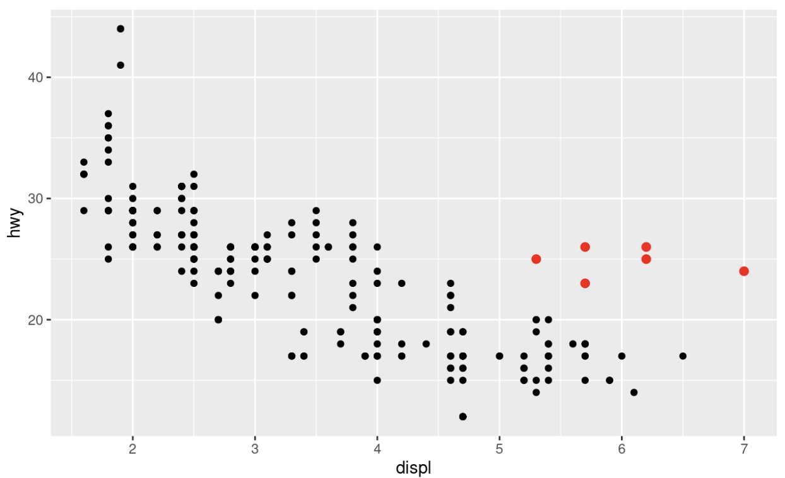
Let’s hypothesize that the cars are hybrids. One way to test this hypothesis is to look at the class value for each car. The class variable of the mpg dataset classifies cars into groups such as compact, midsize, and SUV. If the outlying points are hybrids, they should be classified as compact cars or, perhaps, subcompact cars (keep in mind that this data was collected before hybrid trucks and SUVs became popular).
You can add a third variable, such as class, to a two dimensional scatterplot by mapping it to an aesthetic. An aesthetic is a visual property of the objects in your plot. Aesthetics include things like the size, the shape, or the color of your points. You can display a point (like the one below) in different ways by changing the values of its aesthetic properties. Since we already use the word “value” to describe data, let’s use the word “level” to describe aesthetic properties. Here we change the levels of a point’s size, shape, and color to make the point small, triangular, or blue:
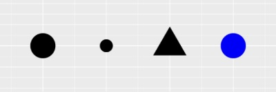
You can convey information about your data by mapping the aesthetics in your plot to the variables in your dataset. For example, you can map the colors of your points to the class variable to reveal the class of each car.
ggplot(data = mpg) +geom_point(mapping =aes(x = displ, y = hwy, color = class))
(If you prefer British English, you can use colour instead of color.)
To map an aesthetic to a variable, associate the name of the aesthetic to the name of the variable inside aes(). ggplot2 will automatically assign a unique level of the aesthetic (here a unique color) to each unique value of the variable, a process known as scaling. ggplot2 will also add a legend that explains which levels correspond to which values.
The colors reveal that many of the unusual points are two-seater cars. These cars don’t seem like hybrids, and are, in fact, sports cars! Sports cars have large engines like SUVs and pickup trucks, but small bodies like midsize and compact cars, which improves their gas mileage. In hindsight, these cars were unlikely to be hybrids since they have large engines.
In the above example, we mapped class to the color aesthetic, but we could have mapped class to the size aesthetic in the same way. In this case, the exact size of each point would reveal its class affiliation. We get a warning here, because mapping an unordered variable (class) to an ordered aesthetic (size) is not a good idea.
Warning: Using size for a discrete variable is not advised.
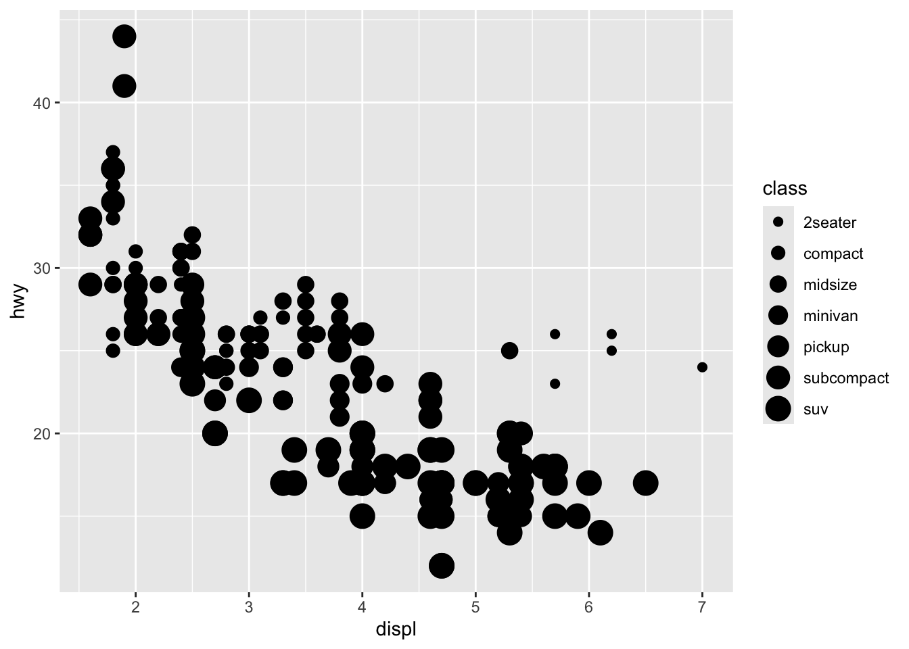
Or we could have mapped class to the alpha aesthetic, which controls the transparency of the points, or to the shape aesthetic, which controls the shape of the points.
Warning: The shape palette can deal with a maximum of 6 discrete values because more
than 6 becomes difficult to discriminate
ℹ you have requested 7 values. Consider specifying shapes manually if you need
that many have them.
Warning: Removed 62 rows containing missing values or values outside the scale range
(`geom_point()`).
What happened to the SUVs? ggplot2 will only use six shapes at a time. By default, additional groups will go unplotted when you use the shape aesthetic.
For each aesthetic, you use aes() to associate the name of the aesthetic with a variable to display. The aes() function gathers together each of the aesthetic mappings used by a layer and passes them to the layer’s mapping argument. The syntax highlights a useful insight about x and y: the x and y locations of a point are themselves aesthetics, visual properties that you can map to variables to display information about the data.
Once you map an aesthetic, ggplot2 takes care of the rest. It selects a reasonable scale to use with the aesthetic, and it constructs a legend that explains the mapping between levels and values. For x and y aesthetics, ggplot2 does not create a legend, but it creates an axis line with tick marks and a label. The axis line acts as a legend; it explains the mapping between locations and values.
You can also set the aesthetic properties of your geom manually. For example, we can make all of the points in our plot blue:
ggplot(data = mpg) +geom_point(mapping =aes(x = displ, y = hwy), color ="blue")
Here, the color doesn’t convey information about a variable, but only changes the appearance of the plot. To set an aesthetic manually, set the aesthetic by name as an argument of your geom function; i.e. it goes outside of aes(). You’ll need to pick a level that makes sense for that aesthetic:
name of a color as a character string.
The size of a point in mm.
The shape of a point as a number, as shown in Figure 3.1.
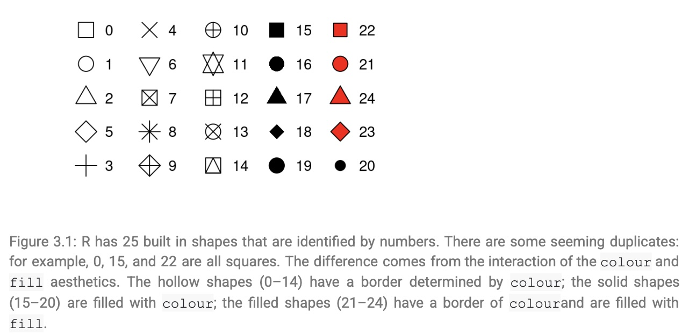
As you start to run R code, you’re likely to run into problems. Don’t worry — it happens to everyone.
Start by carefully comparing the code that you’re running to the code in the assignment. R is extremely picky, and a misplaced character can make all the difference. Make sure that every ( is matched with a ) and every ” is paired with another “. Sometimes you’ll run the code and nothing happens. Check the left-hand of your console: if it’s a +, it means that R doesn’t think you’ve typed a complete expression and it’s waiting for you to finish it. In this case, it’s usually easy to start from scratch again by pressing ESCAPE to abort processing the current command.
One common problem when creating ggplot2 graphics is to put the + in the wrong place: it has to come at the end of the line, not the start. In other words, make sure you haven’t accidentally written code like this:
If you’re still stuck, try the help. You can get help about any R function by running ?function_name in the console, or selecting the function name and pressing F1 in RStudio. Don’t worry if the help doesn’t seem that helpful - instead skip down to the examples and look for code that matches what you’re trying to do.
If that doesn’t help, carefully read the error message. Sometimes the answer will be buried there! But when you’re new to R, the answer might be in the error message but you don’t yet know how to understand it. Another great tool is Google: try googling the error message, as it’s likely someone else has had the same problem, and has gotten help online.
Facets
Reference : https://rpubs.com/uky994/583752
One way to add additional variables is with aesthetics. Another way, particularly useful for categorical variables, is to split your plot into facets, subplots that each display one subset of the data.
To facet your plot by a single variable, use facet_wrap(). The first argument of facet_wrap() should be a formula, which you create with ~ followed by a variable name (here “formula” is the name of a data structure in R, not a synonym for “equation”). The variable that you pass to facet_wrap() should be discrete.
To facet your plot on the combination of two variables, add facet_grid() to your plot call. The first argument of facet_grid() is also a formula. This time the formula should contain two variable names separated by a ~.
# drv = the type of drive train, where # f = front-wheel drive, # r = rear wheel drive, # 4 = 4wd
Problem 4
Make a scatterplot of hwy vs cyl.
# hwy = highway miles per gallon# cyl = number of cylinders in the car engine # Note that the higher the number of cylinders should cause more gas usage,# causing the mileage to go down.ggplot(data = mpg, aes(x=cyl, y=hwy)) +geom_point()
What happens if you make a scatterplot of class vs drv? Why is the plot not useful?
# class = "type" of car# drv = the type of drive train, where # f = front-wheel drive, # r = rear wheel drive, # 4 = 4wdggplot(data=mpg, aes(x=class, y=drv)) +geom_point()
# This isn't particularly useful as most cars have multiple drive trains,# depending on what is offered for the vehicle.
Problem 6
Consider the following plot. Whay are the points not blue?
ggplot(data = mpg, mapping =aes(x = displ, y = hwy, color ="blue")) +geom_point( )
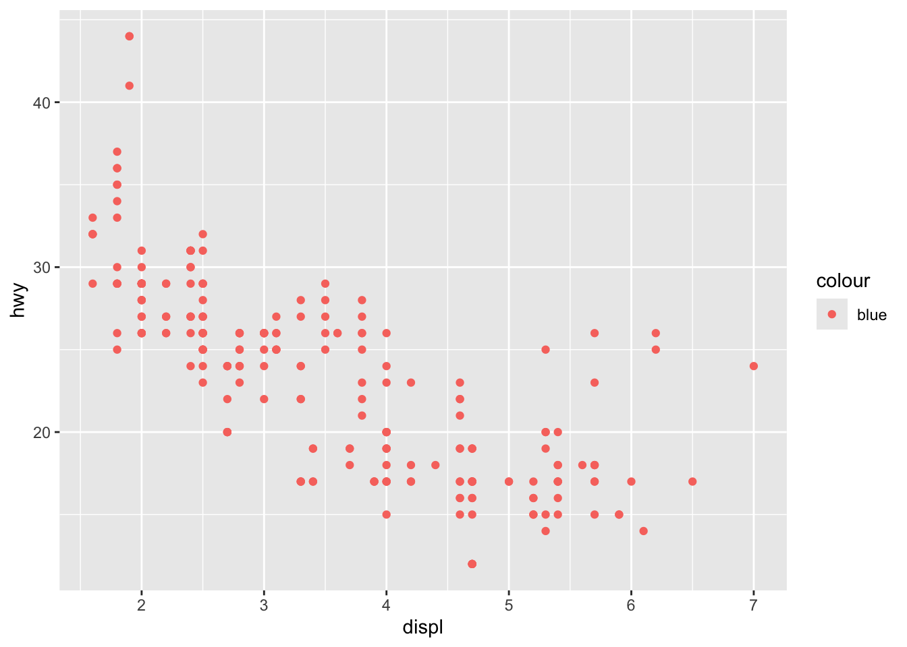
# The problem is that the color is not mapped to a variable. In the mapping for# aesthtics, we are defining what the variables are. In this case, we are saying# x = displ, y = hwy, and color = "blue". This is saying that we have a variable# called "x", "y", and "color" and we are defining what they are. We are making# a new variable (column) and just filling it in with the text "blue". # We can change the color of the points in the geom_point function.ggplot(data = mpg, mapping =aes(x = displ, y = hwy)) +geom_point(color ="blue")
Problem 7
Which variables in mpg are categorical? Which variables are continuous? Discrete?
Map a continuous variable to color, size, and shape. How do these aesthetics behave differently for categorical vs. continuous variables?
# Note that some quantitative variables are discrete and some are continuous.# Discrete : year, cyl# Continuous : displ, cty, hwy# We can use the previous ggplot and make some changes :# Here is the previous plot : ggplot(data = mpg) +geom_point(mapping =aes(x = displ, y = hwy), color ="blue")
# This already has a color to the points. We could change ALL the points# to a different color :ggplot(data = mpg) +geom_point(mapping =aes(x = displ, y = hwy), color ="green")
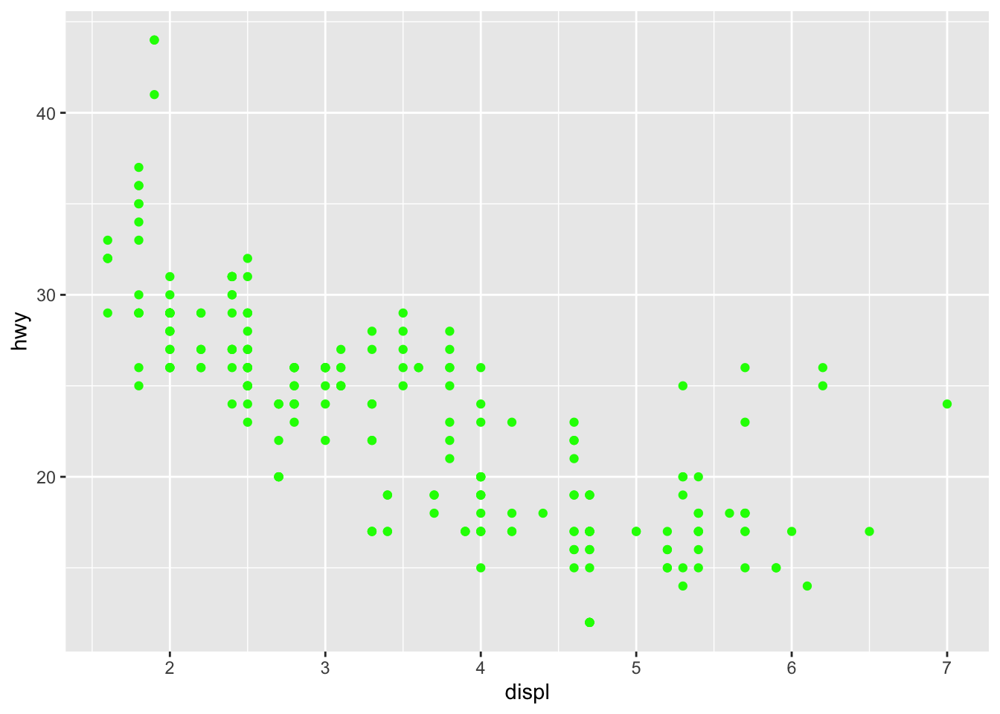
# Note : UGH! Bad color!# What if we wanted to change the color based on the variable "displ"? ggplot(data = mpg) +geom_point(aes(x=displ, y=hwy, color=displ))
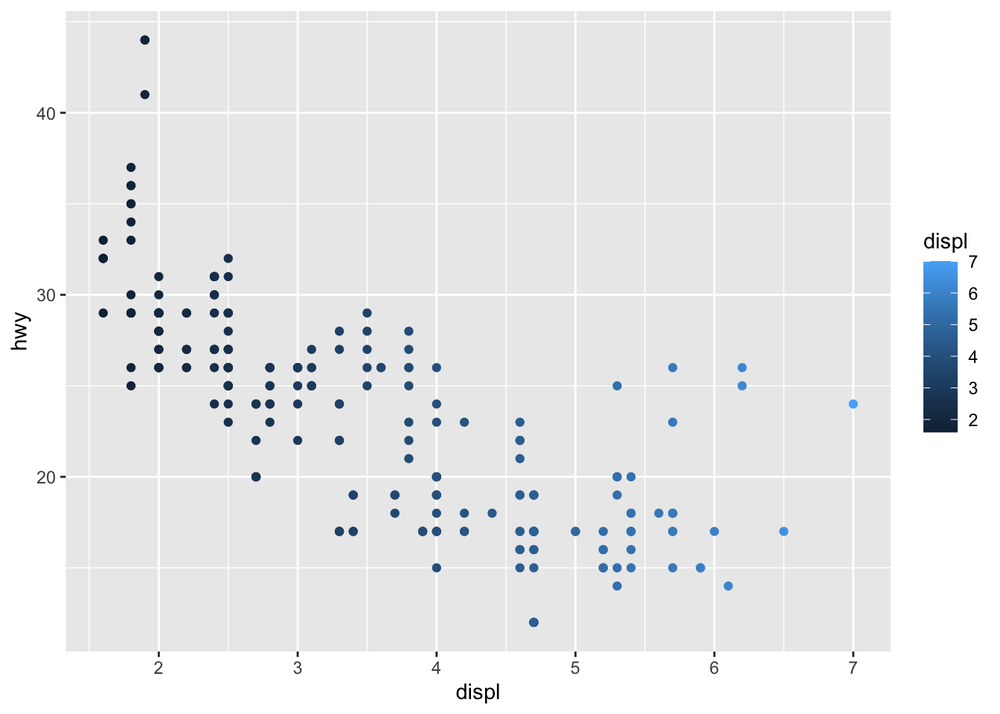
# Notice the colors. You get different grades of the blue color. The larger# values of "displ" have a lighter color of blue and the smaller values # have a darker color. # The reason we don't have major changes in the color (blue, red, green, etc)# is because this is continuous (quantitative). Some values are "slightly" # different than others, so the color is "slightly" different to represent # that change.# Let's throw in a categorical variable. Let's compare hwy to drvggplot(data=mpg, aes(x=drv, y=hwy)) +geom_point()
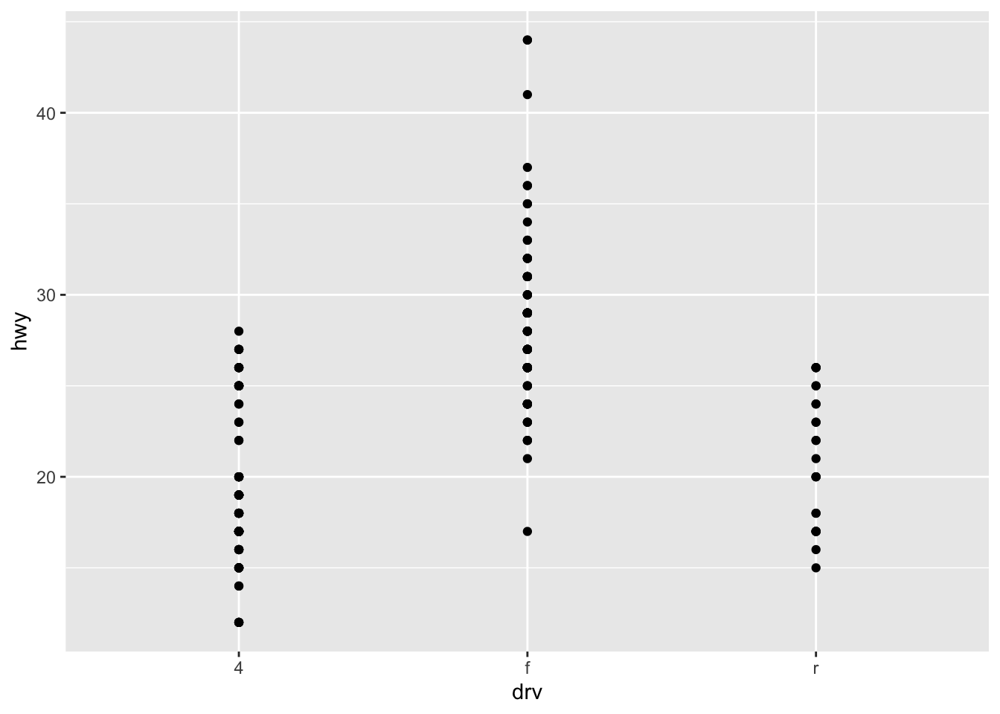
# This shows us the front wheel drive cars tend to get higher gas mileage# on the highway. # We can make this more interesting by coloring the dots by the manufacturer# of the cars to see if a certain brand typcially gets higher gas mileage.ggplot(data=mpg, aes(x=drv, y=hwy, color = manufacturer)) +geom_point()
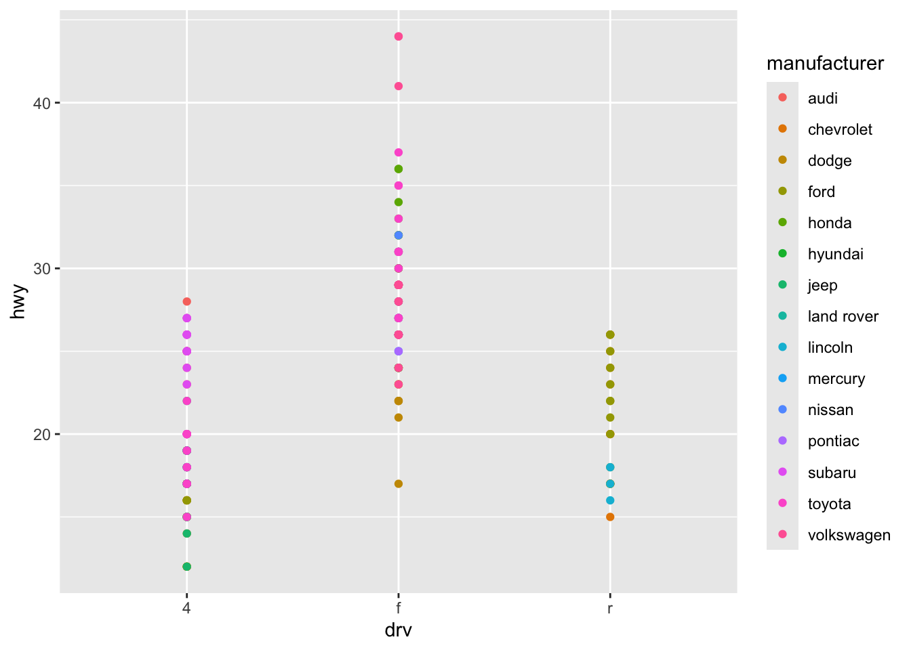
# orggplot(data=mpg) +geom_point(aes(x=drv, y=hwy, color = manufacturer))
# Notice that from the picture, "audi" seems to have the highest gas# mielage for their cars.# We could then have the dots get larger as the mileage goes up.So change # the size of the points based on the "hwy" variable.ggplot(data=mpg) +geom_point(aes(x=drv, y=hwy, color = manufacturer, size=hwy))
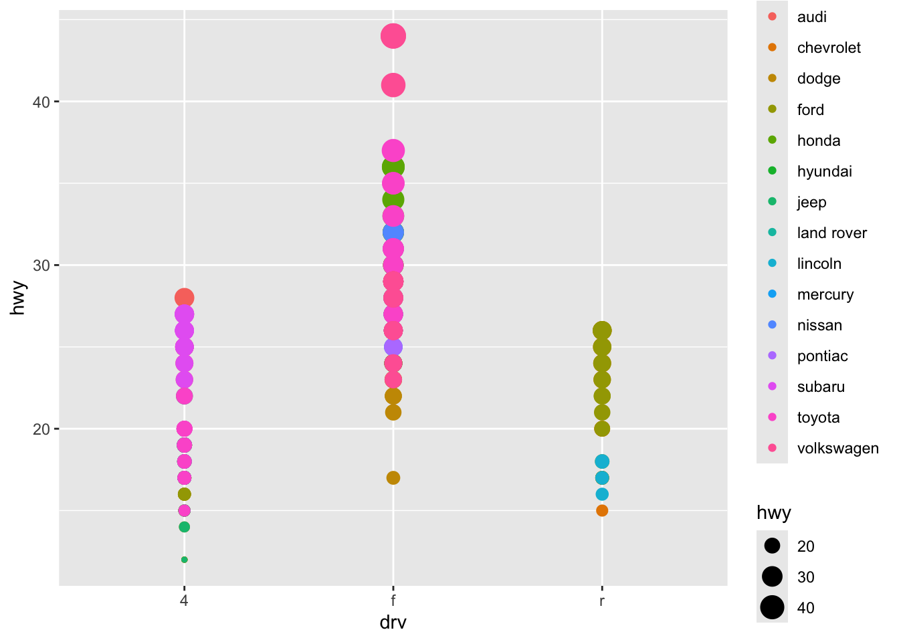
Problem 9
What happens if you map the same variable to multiple aesthetics?
# Note that we just did this with the last example! # What this did kind of depends on your point of view. # In some ways it was redundant. We knew that the higher points represented# the higher mileage. By adding the aesthetic that the size of the points# goes up with the mileage, we don't get any new information.# On the other hand, this also reinforces the mileage data and makes it easier # to see that the bigger points means bigger mileage.
Problem 10
What does the stroke aesthetic do? What shapes does it work with? (Hint: use ?geom_point)
?geom_point# According to the help file, "the stroke aesthetic to modify the width of the# border"# Here is an example of a plot comparing "wt" to "mpg".# The points have shape 21 which is a circle with a border. The border of the# points is black and the interior is white : ggplot(mtcars, aes(wt, mpg)) +geom_point(shape =21, colour ="black", fill ="white", size =5)
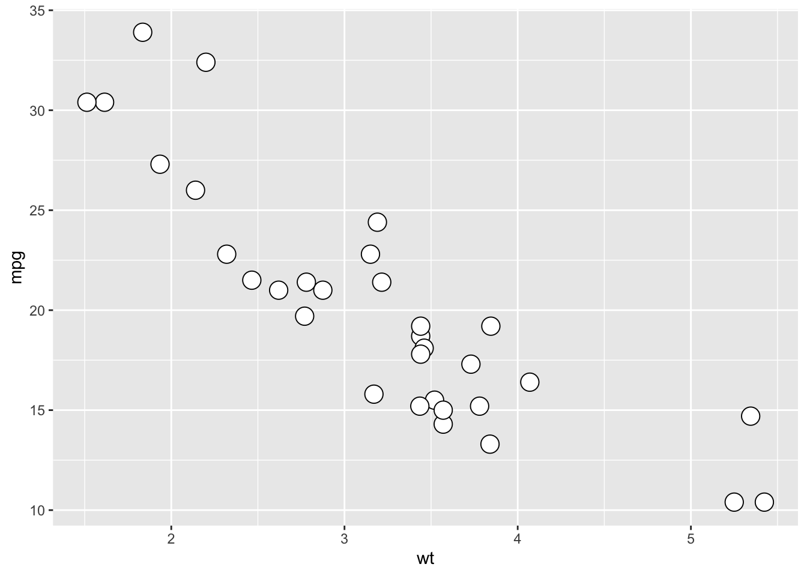
# The "stroke" command perhaps refers to the size of the stroke of the pen # being used? This means a bigger stroke has a bigger outline?ggplot(mtcars, aes(wt, mpg)) +geom_point(shape =21, colour ="black", fill ="white", size =5, stroke =5)
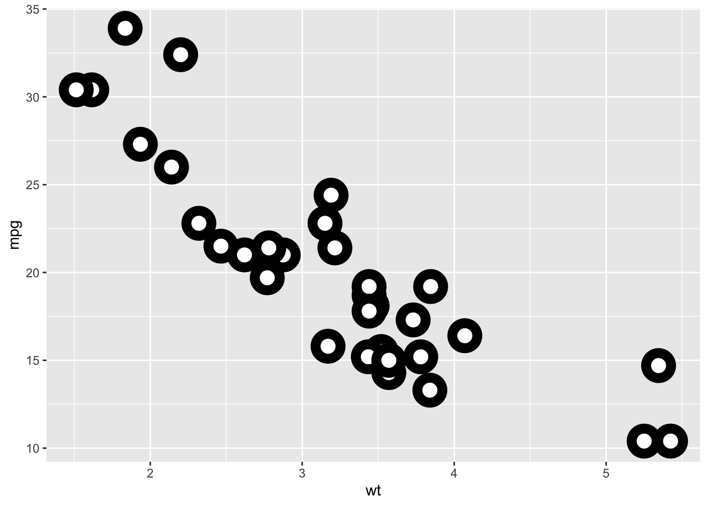
Problem 11
What happens if you map an aesthetic to something other than a variable name, like aes(colour = displ < 5)? Note, you’ll also need to specify x and y.
# Here is a basic plot comparing "displ" to "hwy"ggplot(data=mpg) +geom_point(aes(x=displ, y=hwy))
# Let's add in the condition ggplot(data=mpg) +geom_point(aes(x=displ, y=hwy, color = displ<5))
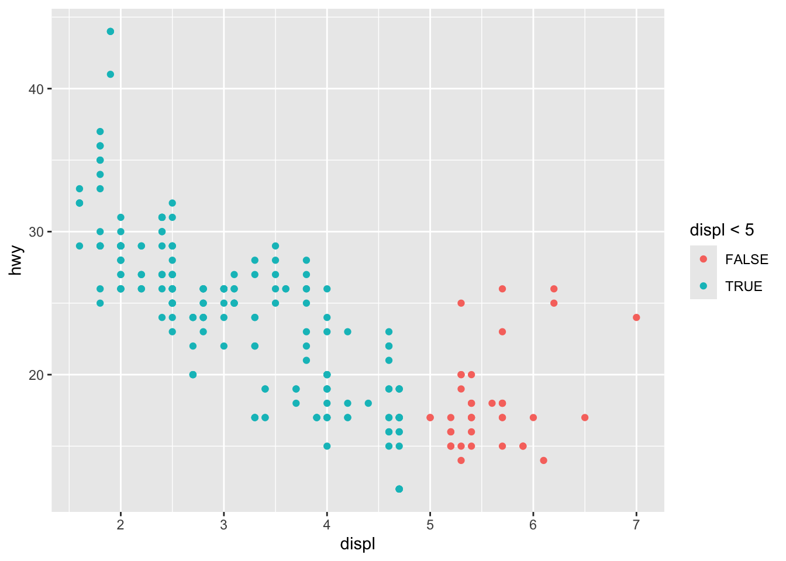
# It appears to show us that we can differentiate two parts of the graph by # color. In other words, points below a threshold get one color and points# above the threshold get a different color.
Problem 12
What happens if you facet on a continuous variable?
# Let's look at an example. Create a graph comparing displ (engine displacement, # in litres) to hwy (highway miles per gallon), but faceted with cty (city miles # per gallon) : ggplot(data = mpg) +geom_point(mapping =aes(x = displ, y = hwy)) +facet_wrap(~ cty)
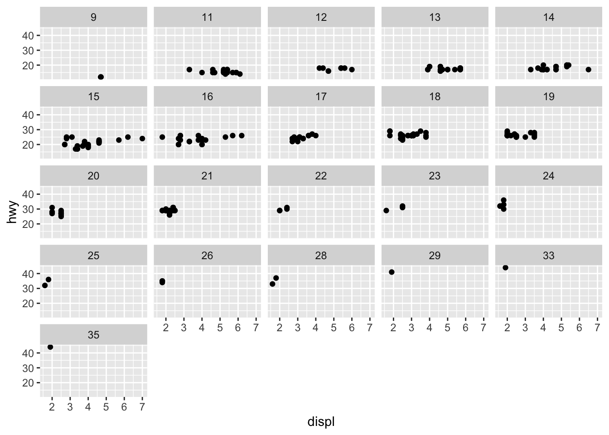
# The continuous variable is converted to a categorical variable, and # the plot contains a facet for each distinct value.
Problem 13
What do the empty cells in plot with facet_grid(drv ~ cyl) mean? How do they relate to this plot?
# When looking at this graph, there are several blank facets# How do they relate to this plot?ggplot(data = mpg) +geom_point(mapping =aes(x = drv, y = cyl))
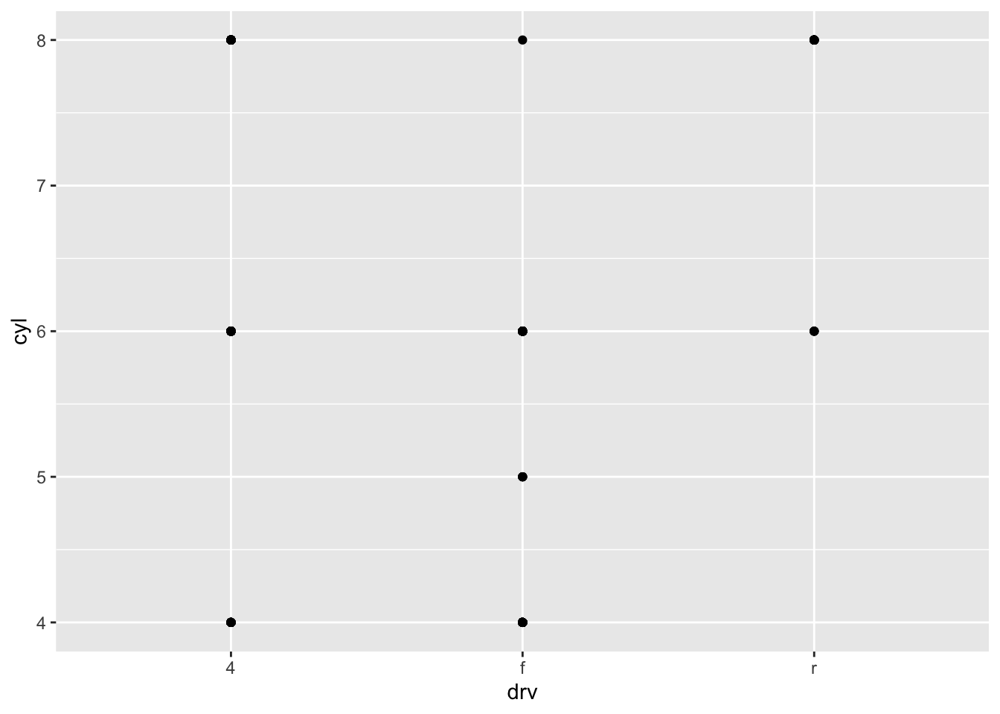
# Each blank facet corresponds to the locations where there is no point.
Problem 14
What plots does the following code make? What does . do?
# The symbol . ignores that dimension when faceting. For example, # drv ~ . facet by values of drv on the y-axis# While, . ~ cyl will facet by values of cyl on the x-axis.ggplot(data = mpg) +geom_point(mapping =aes(x = displ, y = hwy)) +facet_grid(. ~ cyl)
Problem 15
Consider the first faceted plot in this section. What are the advantages to using faceting instead of the colour aesthetic? What are the disadvantages? How might the balance change if you had a larger dataset?
# What are the advantages to using faceting instead of the colour aesthetic? # There are sometimes so many different colors / variables that the points can start to run# together and it is difficult to differentiate the variables. A facet can break up the main# data set by the variables themselves and make it easier to compare one variable to another.# What are the disadvantages? # How might the balance change if you had a larger dataset?
Problem 16
Read ?facet_wrap. What does nrow do? What does ncol do? What other options control the layout of the individual panels? Why doesn’t facet_grid() have nrow and ncol arguments?
# Answer
Problem 17
When using facet_grid() you should usually put the variable with more unique levels in the columns. Why?